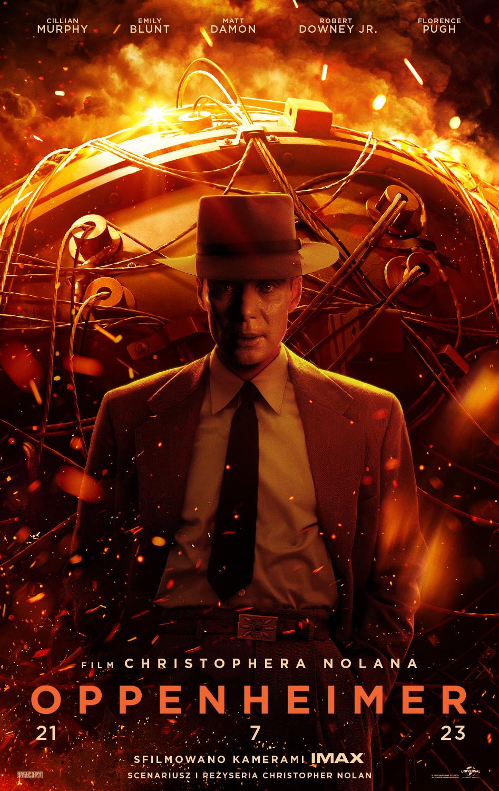
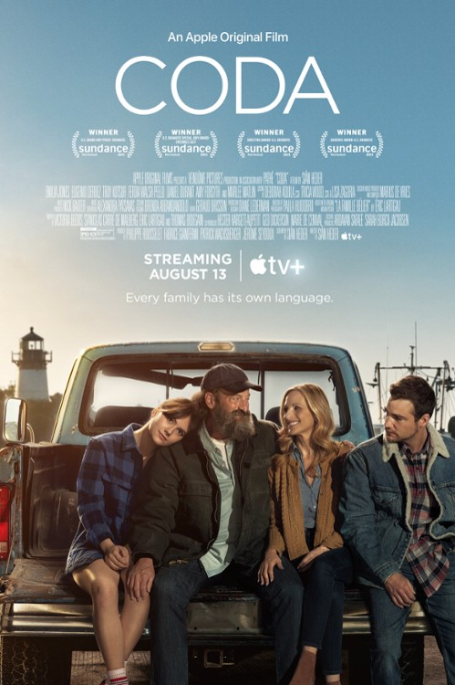
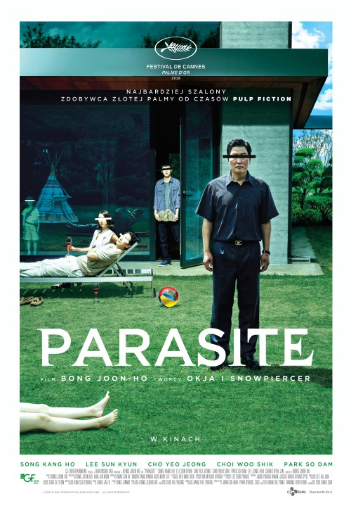

<!DOCTYPE html>
<html lang="pl"></html>
<head>
    <meta http-equiv="Content-type" content="text/html; charset=UTF-8"/>
    <meta name="Author" content="Przewodowski Łukasz" />
    <link rel="stylesheet" href="style.css" />
    <title>Filmy Oscarowe</title>
</head>
<body>
    <header>
        <h1>Filmy</h1>
        <nav>
            
            <a href="index.html">Strona Główna</a>
            <a href="filmy.html">Filmy</a>
            <a href="aktorzy.html">Aktorzy</a>
            <a href="rezyserowie.html">Reżyserowie</a>
            <a href="kontakt.html">Kontakt</a>
        </nav>
    </header>
    <div>
        <table>
            <tr>
                <th>Zdjęcie</th>
                <th>Tytuł</th>
                <th>Opis</th>
            </tr>
            <tr>
                <td></td>
                <td><b>Oppenhaimer (2023)</b></td>
                <td>Oppenheimer w czasie II wojny światowej był dyrektorem programu rozwoju broni jądrowej "Manhattan".  Poza działalnością związaną z bronią atomową Oppenheimer miał ogromne osiągnięcia w innych dziedzinach fizyki, między innymi w badaniach czarnych dziur oraz promieniowania kosmicznego. Resztę życia po opracowaniu bomby atomowej poświęcił na działalność na rzecz ograniczania rozprzestrzeniania się broni jądrowej.</td>
            </tr>
            <tr>
                <td></td>
                <td><b>Wszystko wszędzie naraz(2022)<b></td>
                <td>Evelyn Wang (Michelle Yeoh), borykająca się z trudami codzienności mama w średnim wieku, natrafia na klucz do "multiwersum": sieci przecinających się ze sobą światów, gdzie może zbadać wszystkie drogi życiowe, którymi nie poszła: począwszy od gwiazdy filmowej do uznanego szefa kuchni Teppanyaki. Kiedy pojawiają się mroczne siły, Evelyn będzie musiała wykorzystać wszystko co ma i wszystko czym kiedyś mogła być, aby ocalić to, co jest dla niej najważniejsze: jej rodzinę.</td>
            </tr>
            <tr>
                <td></td>
                <td><b>Coda(2022)</b></td>
                <td>Siedemnastoletnia Ruby (Emilia Jones) jest jedyną słyszącą osobą w swojej rodzinie. To CODA (Child of Deaf Adults), czyli słyszące dziecko niesłyszących rodziców. Jej życie orbituje wokół roli tłumaczki rodziców (Marlee Matlin, Troy Kotsur) i pracy na rodzinnym statku rybackim, na którym codziennie przed szkołą pomaga ojcu i starszemu bratu (Daniel Durant). Jednak po dołączeniu do licealnego chóru Ruby odkrywa w sobie talent do śpiewu. Wkrótce zaczyna czuć coś więcej do Milesa (Ferdia Walsh-Peelo), swojego partnera w duecie. Zachęcona przez swojego entuzjastycznego, wymagającego chórmistrza (Eugenio Derbez) do ubiegania się o przyjęcie do prestiżowej szkoły muzycznej, Ruby jest rozdarta między obowiązkami wobec rodziny a pragnieniem podążania za marzeniami.</td>
            </tr>
            <tr>
                <td></td>
                <td><b>Nomadland(2021)</b></td>
                <td>Fern (Frances McDormand) pakuje swojego vana i wyrusza w drogę jako współczesna nomadka, po tym jak w wyniku recesji straciła właściwie cały swój dotychczasowy dobytek. "Nomadland", trzeci film fabularny reżyserki Chloé Zhao, przedstawia historię Lindy May, Swankie i Boba Wellsa, prawdziwych nomadów, którzy stają się mentorami i towarzyszami Fern podczas jej podróży po rozległym amerykańskim Zachodzie.</td>
            </tr>
            <tr>
                <td></td>
                <td><b>Parasite(2024)</b></td>
                <td>Kierowca bez pracy, gospodyni bez domu, student bez kasy i dziewczyna bez perspektyw wspólnie stworzą perfekcyjny plan: jak w najkrótszym czasie stać się kimś i zająć miejsce bogaczy. W świecie, w którym liczy się tylko wydajność i sukces, przechytrzą system i zawalczą o siebie. Nawet, jeśli będzie to wymagało przekroczenia cienkiej granicy między tym, co jeszcze dozwolone, a tym, co absolutnie zabronione. Bong Joon-ho pokazuje, że prawie każdy marzy o lepszym życiu, awansie i szansie na sukces. Ale tylko niektórzy – dzięki nieposkromionej wyobraźni i braku skrupułów – są w stanie po to wszystko sięgnąć.</td>
            </tr>
        </table>
    </div>

    <div class = "footer-container">
        <footer>
            <p>Przewodowski Łukasz 169354</p>
        </footer>
    </div>  
</body>